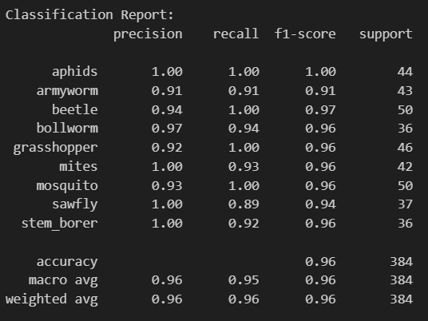
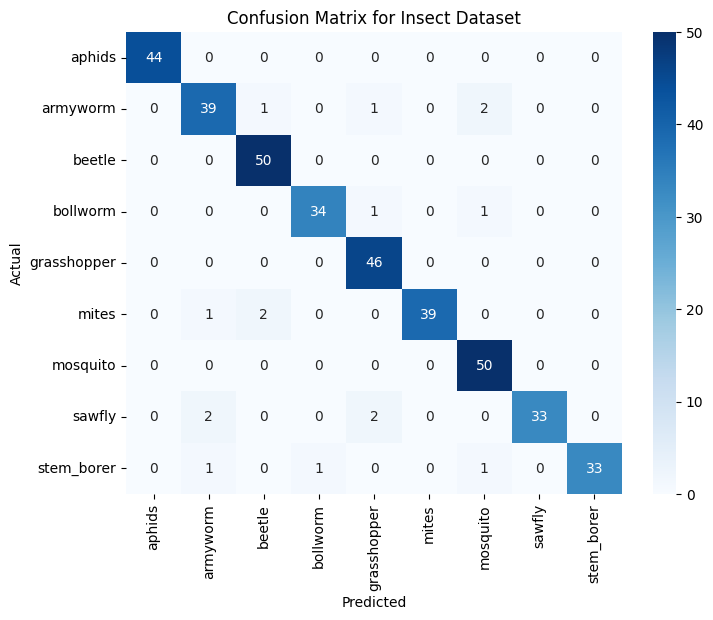
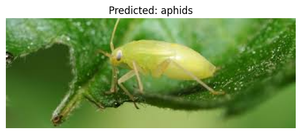

A machine learning project that uses CNN to predict the species of insect, based on the image provided.
Why choose this?
When searching for a suitable dataset to use for this project, I wanted to pick something that was interesting to me and could have real-world applications. Then I came across the BAUInsectv2 dataset which I found to be an interesting opportunity to apply CNNs to agricultural pest identification.
The model demonstrates how Convolutional layers can automatically learn features from images, progressing from simple edges to complex patterns. With the implemented prediction function, users can upload insect photos and receive immediate species classification.
CNNs were selected for this project because of their exceptional performance in image classification tasks. Their ability to learn spatial hierarchies of features makes them ideal for distinguishing between different insect species, even when they appear in different orientations or positions within the image.
The dataset contained 9 insect classes including aphids, armyworms, and beetles, with separate train/test folders for each species. All images were standardized to 150x150 pixels for consistent processing.
The BAUInsectv2 dataset was sourced from Kaggle, containing images of 9 different insect species.
Significant preprocessing was required to prepare the images for the CNN:
Using Python (Jupyter Notebook) and libraries like matplotlib and seaborn, I tracked the model's training progress and evaluated its performance.
The training process showed consistent improvement across 11 epochs, with the loss decreasing from [initial value] to [final value]. Repeated runs of the model would take around 6-8 minuets due to the size of the dataset, although that does not seem long, between errors occurring and rewriting code, having to wait that time during the training and waiting for each epoch was to much time. Implanting CUDAS to the model would allow it to use the GPU on my machine. This increased the speed for the training. While the model achieved 95% accuracy, the confusion matrix revealed some areas where species were occasionally misclassified.
A classification report was generated to provide detailed metrics (precision, recall, F1-score) for each insect class, helping identify which species were most challenging for the model to distinguish.
Below are the Classification-Report, Confusion Matrix and Predicted Species which were constructed:
  The Convolutional Neural Network (CNN) algorithm was used to classify the insect images into 9 species. CNNs are deep learning models specifically designed for processing grid-like data such as images. They work by automatically learning hierarchical features through convolutional filters that scan the input image.
In this project, the CNN architecture consisted of:
The model was trained using the Adam optimizer with a learning rate of 0.001 and cross-entropy loss function. The dataset was automatically split into training and validation sets during the training process. The model achieved high accuracy, as demonstrated by the confusion matrix and classification report.
Online sources that help with the construction of the CNN model:
This project was implemented using the following tools: